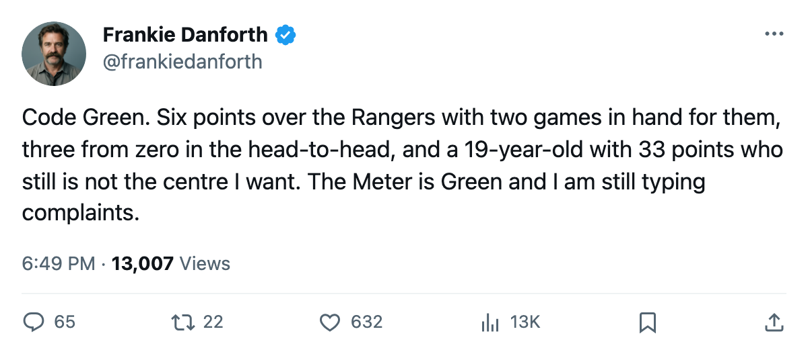
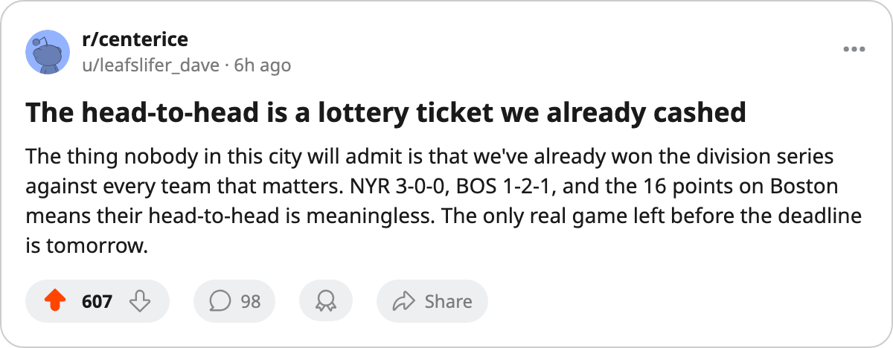

TOR
TORDANFORTH: Code Green, a 6-point lead with 2 games in hand for the only club that matters, and I still want a centre
The Rangers are the last thing in the East that can make me check the standings twice. Everything else is noise.
 Frankie DanforthColumnist · Queen City Telegram
Frankie DanforthColumnist · Queen City Telegram
Code Green

Six points. Two games in hand for the chaser. Those are the numbers on 2006-01-12 that separate Toronto from  New York Rangers, and they are the only two that make me reach for the Panic Meter. Everyone else in the conference is 10 or more behind.
New York Rangers, and they are the only two that make me reach for the Panic Meter. Everyone else in the conference is 10 or more behind.  Boston Bruins is 16 back and lost two straight to close the week. The rest are a different sport.
Boston Bruins is 16 back and lost two straight to close the week. The rest are a different sport.
So the Meter stays Green. Fourteen wins against eight losses and two overtimes, 157 goals for against 90 against, a lead that would take a catastrophe to unwind. I am not going to pretend the standings worry me when they do not.
What worries me is tomorrow. New York Rangers has won 7 in a row and holds two games in hand. They are the only club in the East with a schedule that allows them to pass you while you sleep. Every other team needs Toronto to collapse. The Rangers need to keep doing what they are already doing.
The insurance policy
The head-to-head reads 3-0-0, 15-7 in goals. One bad night at the Garden still leaves you two points ahead of them for the season series. You can survive a Luongo off-night or a third line that goes quiet. Three meetings, three wins, and the Rangers have not solved anything about this roster in any of them.
I will take it. I will take it and say nothing about it because a 5-0 goal differential in a season series against your closest chaser is the kind of thing I used to think this club could not do.
The kid is doing it
Petr Chlup92 is 19. He has 33 points in 43 games at 20.7 minutes a night on a line that is not the top line, and he is not the centre behind  Mats Sundin92 that I have wanted since the winter of 2004, but he is a 19-year-old carrying 33 points at 20.7 minutes and telling me my complaint list is shorter than it was.
Mats Sundin92 that I have wanted since the winter of 2004, but he is a 19-year-old carrying 33 points at 20.7 minutes and telling me my complaint list is shorter than it was.
I will not surrender the position. The draw-winning centre who makes a top two line a problem for every opponent in a seven-game series does not have 18 assists in 43 games. But the kid is closer than anyone I have watched in this sweater since 2004, and I said the problem was real, and now it is less real, and that is what it is.
What I want
A fourth line that costs me nothing. Vaclav Spacek81 at 4.8 minutes a night on the fourth centre slot is not a tax.  Pavel Brendl83 at 3.5 minutes is not a tax either, but it is a nothing. Give me a winger who hits someone so the fourth line earns its minutes instead of waiting for the shift to end.
Pavel Brendl83 at 3.5 minutes is not a tax either, but it is a nothing. Give me a winger who hits someone so the fourth line earns its minutes instead of waiting for the shift to end.
The Rangers are tomorrow. The lead is six. The head-to-head is three from zero. The kid at 19 has 33 points. The fourth line is still a nothing. The Meter is Green and I am still annoyed.

